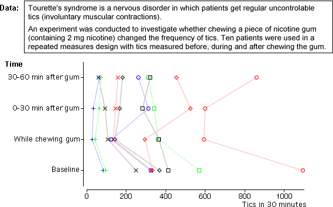
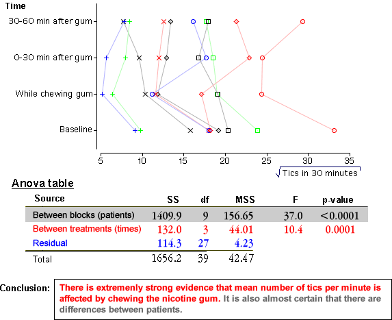

Model and assumptions
The analysis of variance table and associated test for differences between the treatments are based on a model that is assumed to hold for the data.
y
= (overall mean) + (effect depending on block)
+ (effect depending on
treatment) + error
The error is assumed to have a normal distribution with mean zero and constant standard deviation. The most important requirements of this model are:
Transformations
When the model assumptions do not hold, a nonlinear transformation of the response before analysis often helps. In particular, if high unexplained variability seems to be associated with high response means, a log or square root transformation often helps.
This is most easily explained in an example.
Nicotine gum and tics
In the following data set, the assumption of equal unexplained variability seems to be violated.

There seems to be far greater variability in the number of tics for the patients who are worse affected by Tourette's syndrome than for those whose baseline number of tics is low, so the assumptions for the model underlying analysis of variance do not hold well.
Analysis of square root of number of tics
A transformation of the response variable (number of tics in 30 minutes) before analysis helps to equal out the unexplained variation. An analysis of the square root of the number of tics is shown below.
